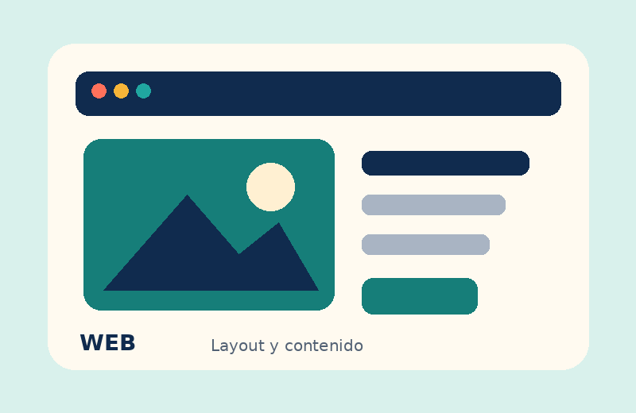
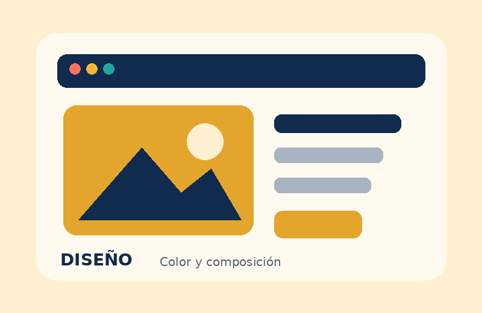
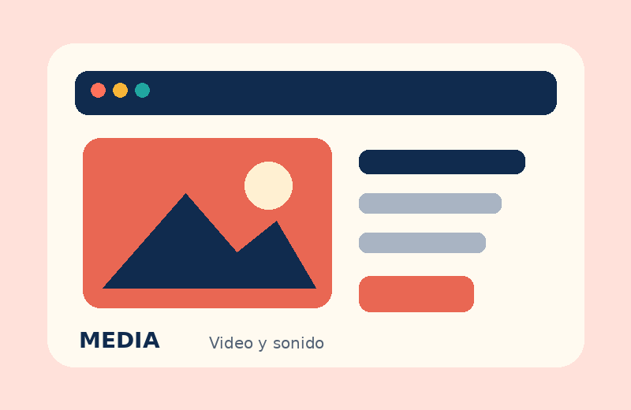

Páginas web
Organizo la información en secciones claras para que las personas encuentren lo que buscan sin complicarse.
Ver ejemploIDEAS QUE SE VUELVEN DIGITALES
Este es un pequeño espacio creativo donde reúno ideas de diseño, páginas web y contenido digital. La meta es que cada proyecto sea fácil de usar y tenga su propio estilo.
Hecho con curiosidad.
HTML, CSS y un poco de JavaScript.
Un sitio sencillo, visual y adaptable
LO QUE PUEDO HACER
Estos son algunos temas que me gusta trabajar y seguir practicando.
Organizo la información en secciones claras para que las personas encuentren lo que buscan sin complicarse.
Ver ejemploCombino colores, imágenes y tipografías para que el sitio tenga una identidad propia y sea agradable de mirar.
Ver ejemploIntegro recursos de audio y video cuando ayudan a explicar mejor una idea o presentar un proyecto.
Ver recursosUNA MUESTRA DE TRABAJO
Ejemplos de práctica que muestran distintas formas de usar el diseño web.

01DISEÑO WEB
Una propuesta con secciones simples, buena lectura y navegación directa.

02DISEÑO VISUAL
Una composición que mantiene los colores y los elementos visuales en equilibrio.

03MULTIMEDIA
Recursos audiovisuales que complementan el contenido sin recargar la página.
UN POCO DE MULTIMEDIA
Agregué un audio corto de prueba y un video insertado desde YouTube. El audio está dentro de la carpeta del proyecto; el video necesita conexión a internet.
Audio local de prueba · 4 segundos
Video demostrativo insertado con iframe. Puedes cambiarlo por un video relacionado con tu tema.
¿TIENES UNA IDEA?
Este formulario es una demostración de interacción para la práctica. No envía información a un servidor.